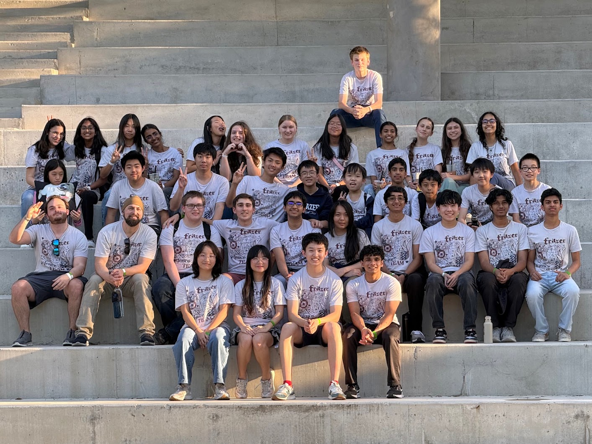

Science Olympiad

Science Olympiad is a competition in which students compete in a variety of different events. There are a total of 23 events that change (almost) every year to keep competitors on their toes. Students typically select around 3-4 events, with one or two partners per event. Middle schoolers compete in Division B, while high schoolers compete in Division C. Up to 5 ninth graders are allowed to compete on a Division B team and up to 7 twelfth graders are allowed on a Division C team.Generally, Science Olympiad is the most popular out of the three types of competitions we compete in, as there are so many topics that may interest you (optics, diseases, ecology, fossils, flight…the list goes on!). Like all the other competitions, however, excelling at Science Olympiad takes a great deal of dedication and work.